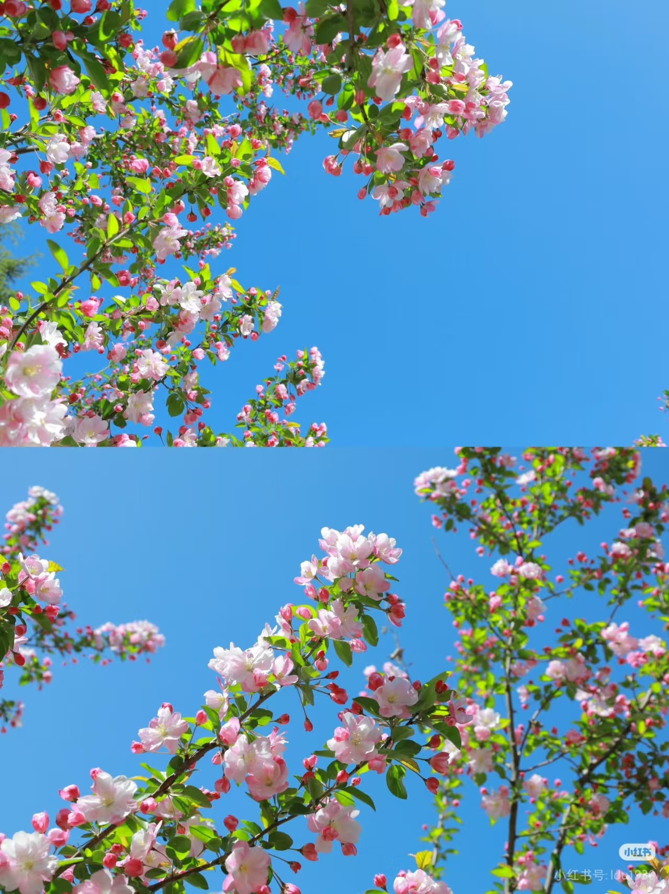
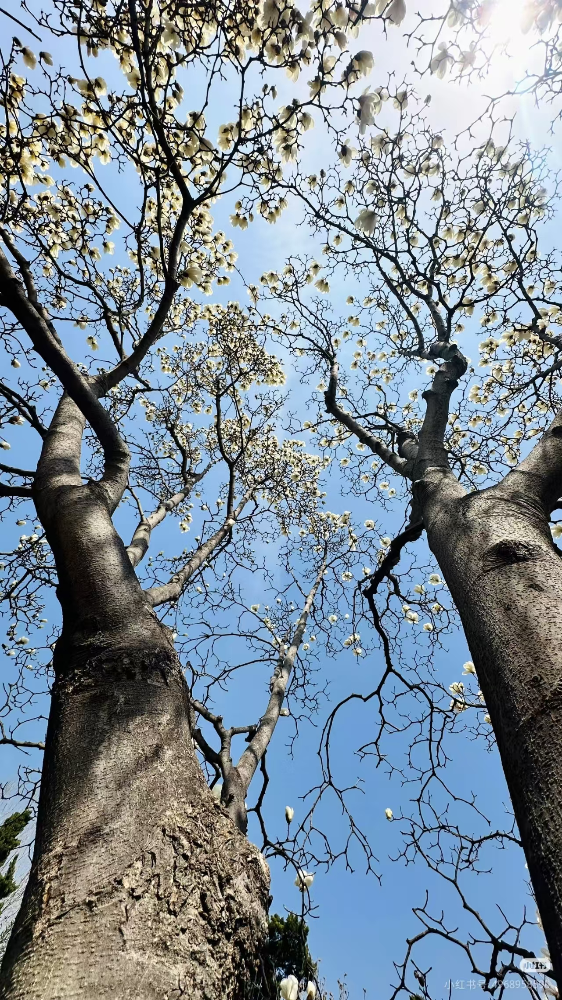
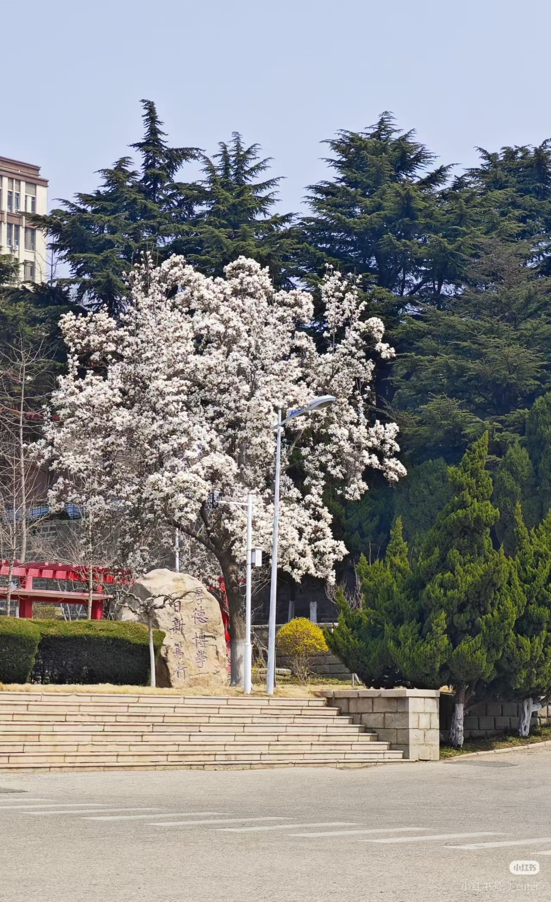

春风拂过烟台的青山，也温柔地唤醒了鲁东大学的满园生机。 当料峭的寒意渐渐褪去，校园便从冬日的沉静中苏醒， 以一片鲜活的嫩绿，铺展成一幅流动的春日长卷。 最先探头的是镜心湖畔的垂柳，千万条柔丝褪去枯黄， 抽出嫩黄的新芽，在微风里轻轻摇曳，似少女垂落的青丝， 温柔地拂过镜面般的湖水。风乍起，吹皱一池春水，柳枝轻点水面 ，漾开圈圈涟漪，将蓝天白云与岸边繁花一同揉碎在波光里。 湖畔的迎春花早已按捺不住，一丛丛、一簇簇，绽出明黄的花朵， 沿着石径蔓延，像撒落了一地阳光，热烈而明媚 。
沿校园小径漫步，处处是春的盛景。道旁的白杨舒展新生的叶片，翠绿鲜亮， 在阳光下泛着柔和的光，历经岁月的枝干愈发挺拔，撑起一片清新的绿荫 。 樱花园里，粉白的花朵如云似霞，层层叠叠缀满枝头，微风拂过，花瓣簌簌飘落， 下起温柔的花雨，铺就一条浪漫的花径 。玉兰也不甘示弱，或洁白似雪，或淡紫如烟， 亭亭立于枝头，花瓣温润，透着清雅的芬芳，与红顶楼的丹檐相互映衬，更显端庄雅致 。 牡丹园里，花苞渐次舒展，国色天香，雍容华贵，粉的娇柔，红的热烈，白的圣洁， 引得蜂蝶翩跹，空气中弥漫着清甜的花香，醉人肺腑。连草地也焕发生机，茸茸的青草间， 点缀着星星点点的野花，蓝的、紫的、黄的，质朴而灵动，为春日添上几分俏皮与野趣。 鸟鸣清脆，从茂密的枝叶间传来，与朗朗书声交织，谱成一曲青春与自然的交响， 让整个校园浸在温柔而蓬勃的诗意里 。


